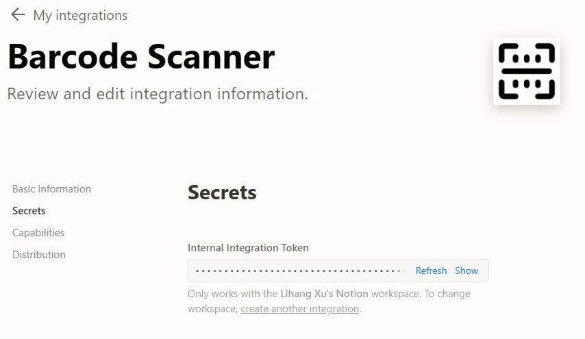
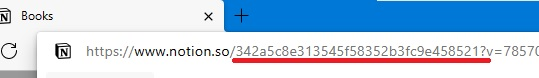
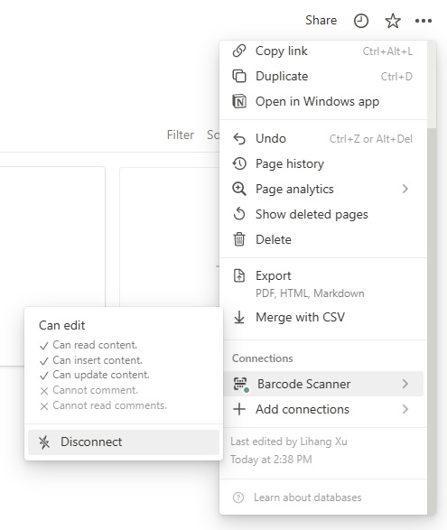
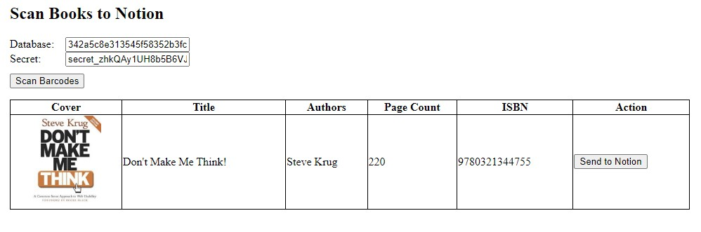

Demo video:
Please follow the steps to make the barcode scanner work for your Notion workspace.
Go to my integrations to create a new integration. In its settings, get the secret.

Create a new database with the following properties: Authors, Page Count and ISBN. You can get the database's ID by checking its URL.

Connect the integration to the database so that the integration can modify the database.

Fill in the secret and database ID we get in the previous steps and then we can use the barcode scanner to add books to Notion.
